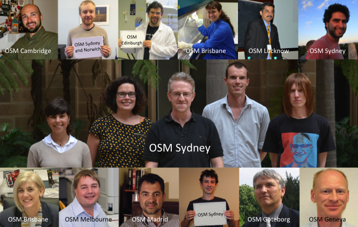

The Open Source Malaria project is trying a different approach to curing malaria. Guided by open
source principles, everything is open and anyone can contribute.
About
Open research is where anyone can take part at any level of the project, that all data and
ideas are shared and there are no patents. You are welcome, whatever your expertise. At the
moment the main focus is on finding a new medicine by improving some molecules
originally discovered by Big Pharma
and put into the
public domain,
something called open source drug discovery. Much of what we need is based in science
(chemistry and biology), but there are important things you can do if you're
outside those fields.
Meet The Team
Chemistry
Biology
Informatics
Administration
Consulting


Join The Team
Open research is where anyone can take part at any level of the project, that all data and
ideas are shared and there are no patents. You are welcome, whatever your expertise.
At the moment the main focus is on finding a new medicine by improving some molecules originally discovered by Big Pharma and put into the public domain, something called open source drug discovery. Much of what we need is based in science (chemistry and biology), but there are important things you can do if you're outside those fields.
You just have to adhere to the Six Laws:
First Law: All data are open and all ideas are shared
Second Law: Anyone can take part at any level of the project
Third Law: There will be no patents
Fourth Law: Suggestions are the best form of criticism
Fifth Law: Public discussion is much more valuable than private email
Sixth Law: The project is bigger than, and is not owned by, any given lab.
The default licence for everything in the OSM project is CC-BY, meaning you can use whatever you want for any reason (including to make money) provided you cite the project.
How to get involved:
If you like the sound of open research and curing malaria, then join in! Here's how:
- Check out the current To Do List for details of what's needed right now - help resolve an issue, comment on things that you think need to be done, or post any of your suggestions/ideas.
- Follow the G+, Twitter and Facebook pages.
- Read up on where we are and what we've published on the Wiki and sign up if you want to make changes.
- Check out the fresh chemical and biological data in the Lab Notebooks.
- Watch the regular Online Meetings and maybe come along to the next one.
- If you're a chemist, make a molecule that the project needs so that it can be screened for activity.
- If you're a biologist, see if any of the compounds made by the project might be of interest to you for malaria or some other disease.
- Buy a project T-shirt - money goes to supporting the science - to help spread the word.
- If you're running a lab class that might want to contribute, or if you want to contact the project in some other way, then send us a tweet or post on the G+ or Facebook pages, or, as a last resort, send an email to: opensourcemalaria@gmail.com
- Anyone can run their own project under the umbrella of Open Source Malaria - anyone can add to the wiki, or add items to the Github To Do list or post raw data to the open lab notebooks. If you want to start your own open science project, you could launch it on the first site that was devoted to open source biomedical research: The Synaptic Leap